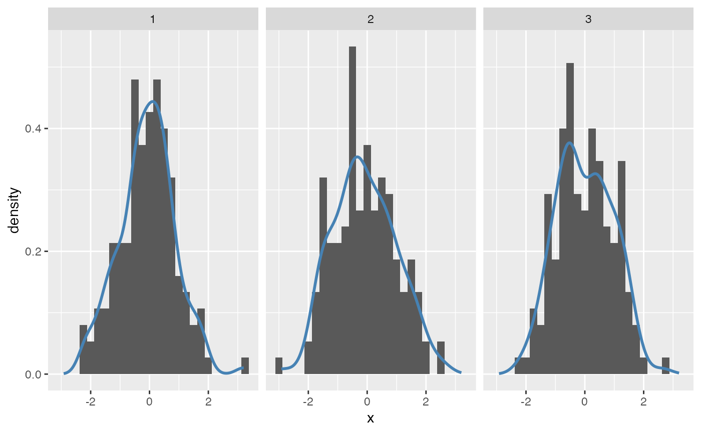
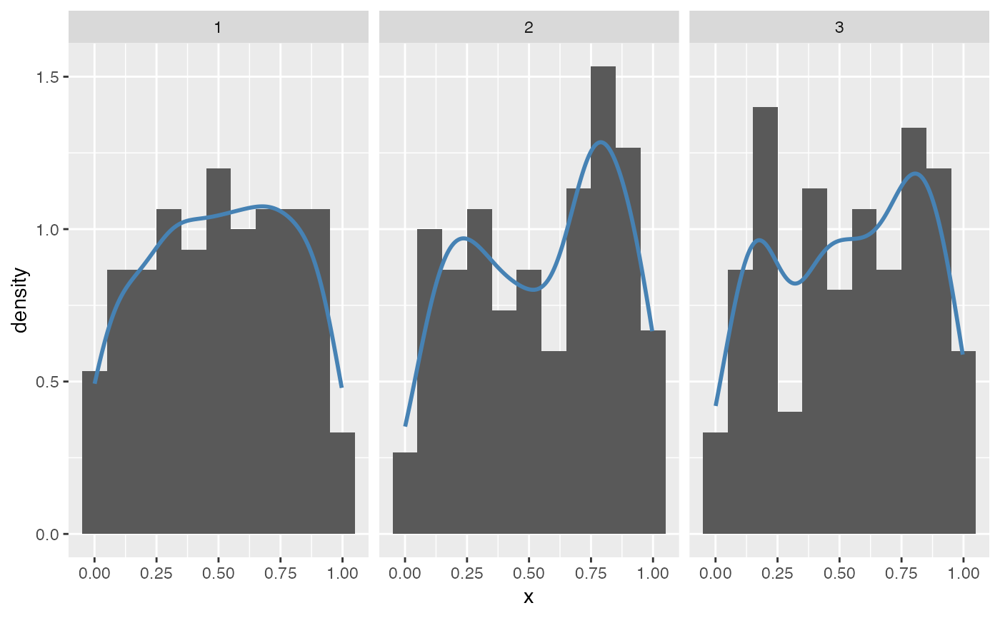

Null hypothesis: variable has specified distribution
null_dist(var, dist, params = NULL)
| var | variable name |
|---|---|
| dist | distribution name. One of: beta, cauchy, chisq, exp, f, gamma, geom, lnorm, logis, nbinom, binom, norm, pois, t, unif, weibull |
| params | list of parameters of distribution. If |
a function that given data generates a null data set.
For use with lineup or rorschach
null_permute, null_lm
dframe <- data.frame(x = rnorm(150)) library(ggplot2) # three histograms of normally distributed values ggplot( data=rorschach(method=null_dist("x", "norm"), n = 3, true=dframe) ) + geom_histogram(aes(x=x, y=..density..), binwidth=0.25) + facet_grid(.~.sample) + geom_density(aes(x=x), colour="steelblue", size=1)# uniform distributions are not as easy to recognize as such dframe$x = runif(150) ggplot( data=rorschach(method=null_dist("x", "uniform", params=list(min=0, max=1)), n = 3, true=dframe)) + geom_histogram(aes(x=x, y=..density..), binwidth=0.1) + facet_grid(.~.sample) + geom_density(aes(x=x), colour="steelblue", size=1)